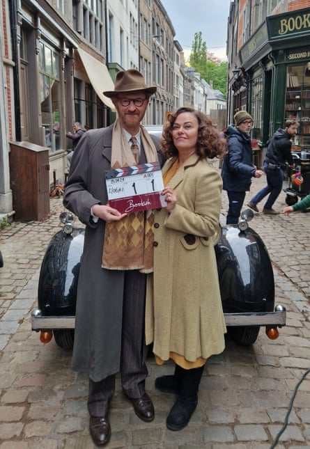

M ark Gatiss arrived on our screens playing a variety of grotesques in The League of Gentlemen: mysterious butcher Hilary Briss; palm-reader Mama Lazarou; the buck-toothed, mullet-sporting job-seeker Mickey Michaels; and many more. He co-founded and co-wrote the BBC comedy with Steve Pemberton, Reece Shearsmith and Jeremy Dyson after meeting them at college, and has teamed up with Doctor Who showrunner Steven Moffat to write and cameo in numerous episodes of the Time Lord drama, before the pair created the smash-hit update of Sherlock, in which Gatiss also appeared as Holmes’s brother Mycroft, and another BBC series, Dracula. If that weren’t enough, Gatiss has also popped up in Game of Thrones, Operation Mincemeat and the last two Mission: Impossible films.
Now he’s back in a new detective drama Bookish, in which he plays a crime-solving book emporium owner. We caught up to chat about why he loves the 1940s; whether there will be more Sherlock , Dracula or League of Gentlemen; and what he’d like to do with Tom Cruise.
Hi, Mark. You’ve got a new show – Bookish – about a closeted bookshop owner in postwar London, who has a passion for solving crimes in his spare time. Do you secretly wish you were a postwar bookshop owner who solves crimes in his spare time? I take issue with closeted, because he is not closeted. He just has to be careful. He lives in a lavender marriage with his best friend, Trottie [played by Polly Walker from Bridgerton]. They’ve been married for 10 years; it’s an arrangement, so he’s not closeted in the traditional sense …
As Gore Vidal said about people who weaponise nostalgia: “I have one word for you: dentistry.” Part of the problem with the world we live in is that people get their impression of the second world war from watching The Great Escape on Christmas Day. They’ve forgotten it was fucking horrible. But postwar is one of my favourite periods, because it’s rarely examined but gave rise to the foundations of the welfare state and the NHS. It was a time of great hope, but also great disappointment. Somewhere in there, I think, is something very interesting. The 1940s were also a fabulous time for British cinema, with Powell and Pressburger. But to answer the question: no, I wouldn’t want to live there: people were starving and the country was utterly bankrupt. But it would be interesting to visit.
Detectives tend to be quite memorable individuals: from Sherlock and Poirot to, erm, Cagney and Lacey. What makes Gabriel Book unique? As a student of the genre, I’m very aware that every detective needs a “thing”. Sherlock Holmes is the paradigm, and Agatha Christie explicitly draws lines from him to create Poirot. To me, the greatest one in terms of an original idea is Miss Marple, who solves everything on a microcosmic level. A lot of that was in my head when the title popped in there: Bookish. What if he was an amateur detective bookseller and basically his shop is like an analogue computer? The answer is in there somewhere.
Book is able to work with the police solving crimes because he has a special letter from Winston Churchill. Wouldn’t the Doctor’s psychic paper – which can magically display whatever credentials he needs – be more useful? Doctor Who writer Russell T Davies was asking me about Bookish. I said: “I’ve shamelessly lifted the psychic paper because the letter does exactly the same job!” All my character has to do is pat his breast pocket wherein lies the letter. Otherwise, you’d have to have endless dreary scenes of filling out forms.
Your character in Bookish, who owns a bookshop, is called Gabriel Book. Erm, aren’t you supposed to be one of the greatest TV writers of our generation? It’s called nominative determinism. What’s wrong with that?
We’ve previously known you best for The League of Gentlem en, Sherlock and Dracula. Which is most likely to make a comeback? Or could you do a mixture of all three at once? We all spent years answering the question, “Will The League of Gentlemen finally come back?” Before we did our specials in 2017, for a brief amazing moment, we were able to say: “Yes. The League of Gentlemen is coming back!” Then as soon as the specials had gone out, people would ask: “Is The League of Gentlemen coming back again?” You get about five seconds of air before the question comes round again.
Streets ahead … Gatiss and Polly Walker on the set of Bookish.Photograph: UKTV
It would have been brilliant to do a spin-off to Psychoville [written by and starring Shearsmith and Pemberton] within Inside No 9 with [Psychoville characters] David and Maureen. When I was a kid, I loved Star Trek as well as Doctor Who. There’s a very strange episode of Star Trek with an alien called Gary Seven. He has a shape-shifting cat who turns into this beautiful woman. I’ve only since realised that [Star Trek creator] Gene Roddenberry was trying to pilot another show within his existing show. That’s how you do it.
So we could see Dracula turning up on Sherlock? Or vi ce versa? We did have an idea for a second Dracula, but when you watch the Hammer films, they’re really just remakes of various parts of the novel. It’s a bit like Robin Hood, in that there’s really only one story. If the BBC had asked us, we would’ve written more of a Trumpian sequel, where Dracula says: “I’m a vampire, but people don’t care … ”
Any plans for more Sherlock? We’d do more Sherlock if we could. Steven [Moffat] and I have had an idea for a film. We pitched it to Ben [Cumberbatch, who plays Sherlock] and Martin [Freeman, who plays Watson] during lockdown, just as an excuse to have a video call and talk to someone. But it never happened.
What does Benedict Cumberbatch smell like? I saw him quite recently at the theatre and he smelled of strawberries.
Why don’t you just make a Sherlock but all about Sherlock’s brother Mycroft Holmes, whom you play? We’ve often talked about Professor Challenger, Conan Doyle’s other great creation. There are some great short stories – there’s a brilliant one called The Disintegration Machine – and he’s a brilliant character, but an absolutely awful man. He just hates humanity. He’s a tiny, bad-tempered, nasty but absolutely adorable professor who’s, well, challenging.
Big brother is watching … Gatiss as Mycroft Holmes in Sherlock.Photograph: BBC/Hartswood Films
Or you could do a Sherlock with Benedict Cumberbatch and then, right at the end, he pulls off his rubber mask to reveal he’s actually Mycroft Holmes … Sweating and panting!
… like in Mission: Impossible. Talking of which – you’re in the new Mission: Impossible! What does Tom Cruise smell like? I’m not sure I can remember, as we shot over two years ago. But I’d imagine: expensive aftershave.
What’s Tom Cruise like? He’s a very funny man. He’s there, all the time on set. I’m not in any scenes with him in Dead Reckoning Part One because when we meet, Ethan Hunt is wearing a rubber mask pretending to be someone else. But I share scenes with Tom Cruise in The Final Reckoning.
If you could re-film any of your previous shows but with Tom Cruise in the main role, what would happen? Well, I’d love to have Tom Cruise in Bookish.
Because … ? This is like one of those questions where, the next day, you see in the paper: “Yeah, I’d love to be James Bond, says Eddie Redmayne,” just because someone has asked him in an interview, “Would you like to be James Bond?” and he’s said, “Why not?” So yes, I’d love Tom Cruise to be in Bookish. Maybe it’ll happen.
How about Cruise as Sherlock? I don’t think it’s up his street. Mind you, Robert Downey Jr is a good Holmes, and he’s not a conventional Sherlock, but he’s a brilliant actor. Tom Cruise has already done Interview With the Vampire, so I’m not sure he’d want to play Dracula. Maybe he could play Doctor Who in the big Hollywood version they always thought might happen. He’s done prosthetics before, like when he’s got big fat arms in Tropic Thunder, so I’d like him to play all the characters in The League of Gentlemen. That would stretch him.
Bookish is on U&Alibi from 16 July.